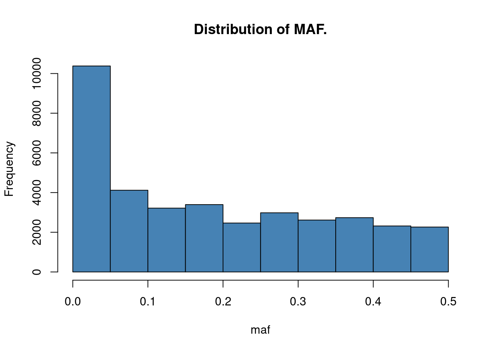

Last updated: 2024-02-12
Checks: 6 1
Knit directory: QBS-statsgen/
This reproducible R Markdown analysis was created with workflowr (version 1.6.2). The Checks tab describes the reproducibility checks that were applied when the results were created. The Past versions tab lists the development history.
The R Markdown is untracked by Git. To know which version of the R
Markdown file created these results, you’ll want to first commit it to
the Git repo. If you’re still working on the analysis, you can ignore
this warning. When you’re finished, you can run
wflow_publish to commit the R Markdown file and build the
HTML.
Great job! The global environment was empty. Objects defined in the global environment can affect the analysis in your R Markdown file in unknown ways. For reproduciblity it’s best to always run the code in an empty environment.
The command set.seed(20231230) was run prior to running
the code in the R Markdown file. Setting a seed ensures that any results
that rely on randomness, e.g. subsampling or permutations, are
reproducible.
Great job! Recording the operating system, R version, and package versions is critical for reproducibility.
Nice! There were no cached chunks for this analysis, so you can be confident that you successfully produced the results during this run.
Great job! Using relative paths to the files within your workflowr project makes it easier to run your code on other machines.
Great! You are using Git for version control. Tracking code development and connecting the code version to the results is critical for reproducibility.
The results in this page were generated with repository version 2a4438c. See the Past versions tab to see a history of the changes made to the R Markdown and HTML files.
Note that you need to be careful to ensure that all relevant files for
the analysis have been committed to Git prior to generating the results
(you can use wflow_publish or
wflow_git_commit). workflowr only checks the R Markdown
file, but you know if there are other scripts or data files that it
depends on. Below is the status of the Git repository when the results
were generated:
Ignored files:
Ignored: .Rproj.user/B81CBE6F/bibliography-index/
Ignored: .Rproj.user/B81CBE6F/ctx/
Ignored: .Rproj.user/B81CBE6F/pcs/
Ignored: .Rproj.user/B81CBE6F/presentation/
Ignored: .Rproj.user/B81CBE6F/profiles-cache/
Ignored: .Rproj.user/B81CBE6F/sources/per/
Ignored: .Rproj.user/B81CBE6F/tutorial/
Ignored: .Rproj.user/shared/notebooks/1C2AC29C-e1-gwas-power/
Ignored: .Rproj.user/shared/notebooks/1EB0B2DC-e1-gwas/1/s/ce0r78nx8keuu/
Ignored: .Rproj.user/shared/notebooks/1EB0B2DC-e1-gwas/1/s/csetup_chunk/
Ignored: .Rproj.user/shared/notebooks/1EB0B2DC-e1-gwas/1/s/czxn6jf8lsykc/
Ignored: .Rproj.user/shared/notebooks/26ED8139-e2-prs/
Ignored: .Rproj.user/shared/notebooks/6834E257-e3-qtlmapping/
Ignored: .Rproj.user/shared/notebooks/7D0F50D6-basic_eqtl_guide/
Ignored: .Rproj.user/shared/notebooks/BC66D613-e2-lmm/
Ignored: .Rproj.user/shared/notebooks/FCFC3BD0-e2-finemapping/
Ignored: data/e2/
Ignored: data/e3/
Ignored: output/
Untracked files:
Untracked: analysis/basic_eqtl_guide.Rmd
Untracked: analysis/e3-qtlmapping.Rmd
Unstaged changes:
Modified: .Rproj.user/B81CBE6F/persistent-state
Modified: .Rproj.user/B81CBE6F/sources/prop/4C8B7780
Modified: .Rproj.user/B81CBE6F/sources/prop/INDEX
Modified: .Rproj.user/shared/notebooks/paths
Modified: analysis/index.Rmd
Note that any generated files, e.g. HTML, png, CSS, etc., are not included in this status report because it is ok for generated content to have uncommitted changes.
There are no past versions. Publish this analysis with
wflow_publish() to start tracking its development.
Download from https://rcweb.dartmouth.edu/Szhao/QBS148-statsgen/e3/. It contains gene expression and genotype data from the GEUVADIS dataset. We only used 95 FIN individuals. Only genotype of SNPs and expression for genes on chr22 are used in this demo.
MatrixQTL, dplyr.install.packages("MatrixEQTL")
install.packages("dplyr")Load the data:
expr = read.table("data/e3/transformed_expression.fin.chr22.txt", row.names = 1)
snps0 = read.table("data/e3/genotype.chr22.fin.txt", header = T)
snps <- snps0[, -1]
rownames(snps) <- snps0[, 1]
snps <- t(snps)Load gene and snp information.
gene <- read.table("data/e3/gene.chr22.loc.txt", header = T)
genotype <- read.table("data/e3/snp.chr22.loc.txt", header = T)
head(gene) geneid chr s1 s2
1 ENSG00000233866.1 chr22 16062157 16063236
2 ENSG00000229286.1 chr22 16076052 16076172
3 ENSG00000235265.1 chr22 16084249 16084826
4 ENSG00000223875.1 chr22 16100517 16124973
5 ENSG00000215270.3 chr22 16122720 16123768
6 ENSG00000206195.4 chr22 16147979 16193004head(genotype) snp chr pos
1 22_16494187_C_A_b37 chr22 16494187
2 22_16494682_G_A_b37 chr22 16494682
3 22_16504399_C_T_b37 chr22 16504399
4 22_16527116_C_T_b37 chr22 16527116
5 22_16870957_C_T_b37 chr22 16870957
6 22_16890307_C_T_b37 chr22 16890307To get a basic idea of the data
head(expr)[,1:5] ENSG00000249263.2 ENSG00000224688.1 ENSG00000075240.12
HG00171 0.259634768 5.278079 4.564746
HG00173 0.006120734 4.671357 2.585686
HG00174 0.155647331 4.219469 3.401698
HG00176 0.111773474 4.613239 4.795421
HG00177 0.617053004 4.761211 2.743071
HG00178 0.205497860 3.880009 4.773510
ENSG00000099937.6 ENSG00000099998.12
HG00171 0.3862190 -0.00740390
HG00173 0.5421739 0.22562020
HG00174 0.2946133 0.02929838
HG00176 0.4858102 0.08549654
HG00177 0.3661320 0.02403985
HG00178 0.4383820 0.05707943dim(expr)[1] 95 633head(snps)[,1:5] 22_16494187_C_A_b37 22_16494682_G_A_b37 22_16504399_C_T_b37
HG00171 0 0 1
HG00173 0 0 1
HG00174 0 0 2
HG00176 0 0 2
HG00177 0 0 2
HG00178 0 0 1
22_16527116_C_T_b37 22_16870957_C_T_b37
HG00171 0 0
HG00173 0 0
HG00174 0 0
HG00176 0 0
HG00177 0 0
HG00178 0 0dim(snps)[1] 95 36494boxplot(t(expr)[,1:5], ylim = c(-10,40), main = "distribution of expression for samples 1-5")Minor allele frequency: the term MAF implies that the allele for which we return the measure has to be the minor (= less common) allele. This means that the MAF is smaller than 0.5 by definition.
So let’s now calculate the MAF for all SNPs among all individuals and correct the returned values so that the value is always given in respect to the minor allele. Then we’ll plot a histogram of the MAFs of all SNPs
maf = colMeans(snps[,-1])/2
# To ensure we actually get the MAF this needs to be inverted.
maf <- pmin(maf, 1-maf)
names(maf) <- colnames(snps[,-1])
hist(maf, main = "Distribution of MAF.", col = "steelblue")
In practice, there will be extensive QCs for genotping and normalization etc for expression data. Genotype and expression data come in all sorts of flavours and preprocessing of this data needs to be done rather carefully. In this short introduction it is not possible to cover this topic in detail. Here, we are assuming the SNP genotype and expression data has passed QC and expression has been normalized. Some additional processing procedures for eQTL mapping:
In an eQTL study often a minimum MAF is required. Since MAF essentially reflects how often an allele has been observed in a population, it also defines how often the gene expression levels have been observed for heterozygous and homozygous alleles.
We will filter out SNPs with MAF < 0.05 from this cohort.
There are clinical covariates, such as age, sex. To correct for population structure, we should also include genotype PCs. This is similar to what we have introduced in exercise 1: performing a GWAS.
To correct for unmeasured confounders, we could perform PCA on gene expression and use PCs as covariates.
pca <- prcomp(expr, center=TRUE, scale = TRUE)
plot(pca)Now we’ll plot the expression levels of the first gene against the first SNP, 10th gene against the 10th SNP, 10th gene against the 10th SNP, as well as the 10th gene against the 15th SNP, depending on the genotypes of the samples by using simple dot plots. We’ll add a bit of random noise (jitter) to the genotype data to make it all look more comprehensible.
Match snps and gene expression
snps <- snps[rownames(expr),]Plot expression vs SNP genotype:
par(mfrow=c(1,2))
df <- cbind(snps[,10], expr[,10])
colnames(df) <- c("geno", "expr")
boxplot(expr ~ geno, data = df, col = "white")
stripchart(expr ~ geno,
data = df,
method = "jitter",
pch = 19,
col = 2:4,
vertical = TRUE,
add = TRUE)
df <- cbind(snps[,15], expr[,10])
colnames(df) <- c("geno", "expr")
boxplot(expr ~ geno, data = df, col = "white")
stripchart(expr ~ geno,
data = df,
method = "jitter",
pch = 19,
col = 2:4,
vertical = TRUE,
add = TRUE)To obtain estimates of the genotypic contribution to gene expression we fit a simple linear regression model of the form \(E_i = \beta_0 + \beta G_i + \alpha X_i+ \epsilon\), where \(E_i\) is the vector of gene expression values for gene \(i\) and \(G_i\) is the genotype vector for the SNP \(i\). \(X_i\) is the covariates. For this demonstration, we will just use the first PC of expression as the only covariate. We are interested in the estimate for \(\beta\) which indicates the change in gene expression for each copy of the second allele.
The p-value indicates the significance of the genetic component in the model. Let’s try that for gene 10 with SNP 10 and SNP 15.
lm_10_10 = lm(expr[, 10] ~ snps[, 10] + as.numeric(pca$x[,1]))
summary(lm_10_10)
Call:
lm(formula = expr[, 10] ~ snps[, 10] + as.numeric(pca$x[, 1]))
Residuals:
Min 1Q Median 3Q Max
-0.6805 -0.2897 -0.1166 0.1894 2.1598
Coefficients:
Estimate Std. Error t value Pr(>|t|)
(Intercept) 0.526215 0.059726 8.811 7.26e-14 ***
snps[, 10] 0.015970 0.092946 0.172 0.8640
as.numeric(pca$x[, 1]) 0.008747 0.004743 1.844 0.0684 .
---
Signif. codes: 0 '***' 0.001 '**' 0.01 '*' 0.05 '.' 0.1 ' ' 1
Residual standard error: 0.4835 on 92 degrees of freedom
Multiple R-squared: 0.03584, Adjusted R-squared: 0.01488
F-statistic: 1.71 on 2 and 92 DF, p-value: 0.1866lm_10_15 = lm(expr[, 10] ~ snps[, 15] + as.numeric(pca$x[,1]))
summary(lm_10_15)
Call:
lm(formula = expr[, 10] ~ snps[, 15] + as.numeric(pca$x[, 1]))
Residuals:
Min 1Q Median 3Q Max
-0.6860 -0.2876 -0.1053 0.1859 2.1554
Coefficients:
Estimate Std. Error t value Pr(>|t|)
(Intercept) 0.5312957 0.0939233 5.657 1.73e-07 ***
snps[, 15] 0.0006032 0.0757633 0.008 0.9937
as.numeric(pca$x[, 1]) 0.0086111 0.0046777 1.841 0.0689 .
---
Signif. codes: 0 '***' 0.001 '**' 0.01 '*' 0.05 '.' 0.1 ' ' 1
Residual standard error: 0.4836 on 92 degrees of freedom
Multiple R-squared: 0.03553, Adjusted R-squared: 0.01456
F-statistic: 1.694 on 2 and 92 DF, p-value: 0.1894So these two models don’t catch any significant effect of explored SNPs and gene expression levels. In fact it is very hard to catch such effects by “manually” exploring real-world genomic data, usually containing tens or hundreds of thousands SNPs and hundreds or thousands gene expressions for large number of samples. Many softwares have been developed to perform eQTL mapping efficiently for thousands of snp-gene pairs, such as MatrixEQTL, fastQTL, tensorQTL etc.
We’ll be using R’s MatrixEQTL package which is designed
for fast eQTL analysis on large genomic data sets.
MatrixEQTL can test for association between genotype and
gene expression using linear regression with either additive or ANOVA
genotype effects. The models can include covariates to account for
factors as population stratification, gender, and clinical variables. It
also supports models with heteroscedastic and/or correlated errors,
false discovery rate estimation and separate treatment of local (cis)
and distant (trans) eQTLs. You can learn more about
MatrixEQTL here.
To perform an eQTL analysis we don’t only need to know the genotype and gene expression values for every sample, but also the genomic positions of genes and SNPs. This is necessary to define which SNPs should be tested against which genes. For cis-eQTL analyses SNPs in proximity to the gene are chosen and for trans-eQTL analyses SNPs further away, or on different chromosomes, are taken into account. The window in cis-eQTL analysis is commonly chosen to be 500kb-1Mb measured from gene’s TSS.
# covariates files
covar <- cbind( "PC1", t(pca$x[,1, drop = F]))
colnames(covar)[1] <- "id"
write.table(covar, file = "output/eqtl-covariates.txt", sep = "\t", row.names = F, col.names = T, quote = F)
# SNP files, filter out MAF <0.05 SNPs.
sid <- names(maf[maf > 0.05])
snpf <- read.table("data/e3/genotype.chr22.fin.txt", header = T)
snpf.filtered <- snpf[snpf$id %in% sid,]
snplocf <- read.table("data/e3/snp.chr22.loc.txt", header = T)
snplocf.filtered <- snplocf[snplocf$snp %in% sid, ]
write.table(snpf.filtered, file = "output/genotype.chr22.fin.maf0.05.txt", sep = "\t", row.names = F, col.names = T, quote = F)
write.table(snplocf.filtered, file = "output/snp.chr22.maf0.05.loc.txt", sep = "\t", row.names = F, col.names = T, quote = F) suppressMessages(library(MatrixEQTL))
SNP_file_name <- "output/genotype.chr22.fin.maf0.05.txt";
snps_location_file_name <- "output/snp.chr22.maf0.05.loc.txt";
expression_file_name <- "data/e3/gene_exp.fin.chr22.txt";
gene_location_file_name <- "data/e3/gene.chr22.loc.txt";
covariates_file_name <- "output/eqtl-covariates.txt";
# Output file name
output_file_name_cis = "output/MatrixEQTL-cis.txt";
output_file_name_tra = "output/MatrixEQTL-trans.txt";
## Settings
# Linear model to use, modelANOVA, modelLINEAR, or modelLINEAR_CROSS
useModel = modelLINEAR; # modelANOVA, modelLINEAR, or modelLINEAR_CROSS
# Error covariance matrix
# Set to numeric() for identity.
errorCovariance = numeric();
# Distance for local gene-SNP pairs
cisDist = 1e6
# Only associations significant at this level will be saved
pvOutputThreshold_cis = 1e-5;
pvOutputThreshold_tra = 1e-5;
## Load genotype data
snps = SlicedData$new();
snps$fileDelimiter = "\t"; # the TAB character
snps$fileOmitCharacters = "NA"; # denote missing values;
snps$fileSkipRows = 1; # one row of column labels
snps$fileSkipColumns = 1; # one column of row labels
snps$fileSliceSize = 2000; # read file in slices of 2,000 rows
snps$LoadFile(SNP_file_name);
## Load gene expression data
gene = SlicedData$new();
gene$fileDelimiter = "\t"; # the TAB character
gene$fileOmitCharacters = "NA"; # denote missing values;
gene$fileSkipRows = 1; # one row of column labels
gene$fileSkipColumns = 1; # one column of row labels
gene$fileSliceSize = 2000; # read file in slices of 2,000 rows
gene$LoadFile(expression_file_name);
## Load covariates
cvrt = SlicedData$new();
cvrt$fileDelimiter = "\t"; # the TAB character
cvrt$fileOmitCharacters = "NA"; # denote missing values;
cvrt$fileSkipRows = 1; # one row of column labels
cvrt$fileSkipColumns = 1; # one column of row labels
if(length(covariates_file_name)>0) {
cvrt$LoadFile(covariates_file_name);
}
## Run the analysis
snpspos = read.table(snps_location_file_name, header = TRUE, stringsAsFactors = FALSE);
genepos = read.table(gene_location_file_name, header = TRUE, stringsAsFactors = FALSE);
me = Matrix_eQTL_main(
snps = snps,
gene = gene,
cvrt = cvrt,
output_file_name = output_file_name_tra,
pvOutputThreshold = pvOutputThreshold_tra,
useModel = useModel,
errorCovariance = errorCovariance,
verbose = FALSE,
output_file_name.cis = output_file_name_cis,
pvOutputThreshold.cis = pvOutputThreshold_cis,
snpspos = snpspos,
genepos = genepos,
cisDist = cisDist,
pvalue.hist = TRUE,
min.pv.by.genesnp = FALSE,
noFDRsaveMemory = FALSE);
me_qq = Matrix_eQTL_main(
snps = snps,
gene = gene,
cvrt = cvrt,
output_file_name = output_file_name_tra,
pvOutputThreshold = pvOutputThreshold_tra,
useModel = useModel,
errorCovariance = errorCovariance,
verbose = FALSE,
output_file_name.cis = output_file_name_cis,
pvOutputThreshold.cis = pvOutputThreshold_cis,
snpspos = snpspos,
genepos = genepos,
cisDist = cisDist,
pvalue.hist = "qqplot",
min.pv.by.genesnp = FALSE,
noFDRsaveMemory = FALSE)
cat('Analysis done in: ', me$time.in.sec, ' seconds', '\n');Analysis done in: 2.394 seconds head(me$cis$eqtls) snps gene statistic pvalue FDR
1 22_45764874_T_C_b37 ENSG00000100376.7 16.12606 1.490974e-28 6.725352e-24
2 22_45767369_A_G_b37 ENSG00000100376.7 16.12606 1.490974e-28 6.725352e-24
3 22_45771974_G_A_b37 ENSG00000100376.7 16.12606 1.490974e-28 6.725352e-24
4 22_45776213_G_A_b37 ENSG00000100376.7 16.12606 1.490974e-28 6.725352e-24
5 22_45794212_G_A_b37 ENSG00000100376.7 16.12606 1.490974e-28 6.725352e-24
6 22_45794283_T_C_b37 ENSG00000100376.7 16.12606 1.490974e-28 6.725352e-24
beta
1 13.25193
2 13.25193
3 13.25193
4 13.25193
5 13.25193
6 13.25193 head(me$trans$eqtls) snps gene statistic pvalue FDR
1 22_32672837_T_G_b37 ENSG00000183773.10 -7.833864 7.967835e-12 0.0001252302
2 22_48718696_T_C_b37 ENSG00000211659.2 7.039648 3.388673e-10 0.0010651933
3 22_48718828_A_G_b37 ENSG00000211659.2 7.039648 3.388673e-10 0.0010651933
4 22_48718966_G_A_b37 ENSG00000211659.2 7.039648 3.388673e-10 0.0010651933
5 22_48719380_G_A_b37 ENSG00000211659.2 7.039648 3.388673e-10 0.0010651933
6 22_25298169_G_A_b37 ENSG00000202058.1 6.779977 1.130160e-09 0.0029604483
beta
1 -1.172794
2 363.130340
3 363.130340
4 363.130340
5 363.130340
6 5.466379 ## Make the histogram of local and distant p-values
plot(me) ## Make the qq-plot of local and distant p-values
plot(me_qq) MatrixEQTL does this for you automatically and returns
the corrected p-value as a false discovery rate (FDR). Common thresholds
on FDR are 5% or 10%. FastQTL uses a perumtation based strategy to get
gene level p values and then FDR for gene p values.
Selects at most one associated SNP per gene. If there are many SNPs
associated with a gene it is most likely that those SNPs are highly
linked to each other (“in high LD”) and therefore they describe the same
effect. There are still cases in which genes are regulated by different
SNPs independently, this cannot be readily determined from the table
produced by MatrixEQTL.
library(dplyr)
snp_values = read.table(SNP_file_name, row.names=1, header=TRUE)
snp_values = data.frame(snps = rownames(snp_values), snp_values, stringsAsFactors = FALSE)
top_eqtls = filter(me$cis$eqtls, FDR <= 0.05) %>%
arrange(FDR) %>%
distinct(gene, .keep_all = TRUE)
mafs = apply(as.matrix(snp_values[-1]),1,mean)/2
mafs = pmin(mafs, 1 - mafs)
mafs = data.frame(snps=names(mafs), maf = mafs)
top_eqtls = left_join(top_eqtls, mafs, by="snps")
head(top_eqtls) snps gene statistic pvalue FDR
1 22_45764874_T_C_b37 ENSG00000100376.7 16.126060 1.490974e-28 6.725352e-24
2 22_41241945_C_T_b37 ENSG00000172404.4 14.772190 5.139381e-26 2.086404e-21
3 22_39747780_G_A_b37 ENSG00000100321.10 11.531146 1.467769e-19 3.724132e-15
4 22_24402321_G_A_b37 ENSG00000184674.7 11.378742 3.030010e-19 7.454999e-15
5 22_26921725_A_G_b37 ENSG00000260065.1 10.655221 9.675930e-18 1.603298e-13
6 22_45809624_C_A_b37 ENSG00000128408.7 -9.192007 1.144721e-14 1.290876e-10
beta maf
1 13.2519275 0.1631579
2 0.1427365 0.4631579
3 3.3888671 0.3421053
4 6.2618570 0.4052632
5 0.4066246 0.4578947
6 -0.5574254 0.3947368# For this we also need df with expression data
gene_values = read.table(expression_file_name, row.names=1, header=TRUE)
gene_values = data.frame(gene = rownames(gene_values), gene_values, stringsAsFactors = FALSE)
top_snp = top_eqtls$snps[2]
top_gene = as.character(top_eqtls$gene[2])
top_snp_data = filter(snp_values, snps == top_snp)
top_gene_data = filter(gene_values, gene == top_gene)
plot_data = t(bind_rows(top_snp_data[-1], top_gene_data[-1]))
colnames(plot_data) = c("snp", "gene_expr")
plot_data = as.data.frame(plot_data)
plot_data$snp = as.factor(plot_data$snp)
head(plot_data) snp gene_expr
HG00171 2 0.2674373
HG00173 1 0.2209592
HG00174 1 0.2234611
HG00176 2 0.4616005
HG00177 2 0.3368802
HG00178 1 0.2106011lm_top = lm(plot_data[,"gene_expr"] ~ as.numeric(plot_data[,"snp"]))
summary(lm_top)
Call:
lm(formula = plot_data[, "gene_expr"] ~ as.numeric(plot_data[,
"snp"]))
Residuals:
Min 1Q Median 3Q Max
-0.22057 -0.03636 -0.01455 0.03381 0.19657
Coefficients:
Estimate Std. Error t value Pr(>|t|)
(Intercept) -0.03425 0.02099 -1.632 0.106
as.numeric(plot_data[, "snp"]) 0.14166 0.01029 13.765 <2e-16 ***
---
Signif. codes: 0 '***' 0.001 '**' 0.01 '*' 0.05 '.' 0.1 ' ' 1
Residual standard error: 0.06708 on 93 degrees of freedom
Multiple R-squared: 0.6708, Adjusted R-squared: 0.6672
F-statistic: 189.5 on 1 and 93 DF, p-value: < 2.2e-16plot(plot_data, col="steelblue",
main = paste0(top_gene, " vs ", top_snp))
abline(lm_top, col="darkorange", lwd = 2, lty = 2)
y_range = range(plot_data[,"gene_expr"])
text(x=2, y=y_range[1] + 0.5*diff(y_range), paste0("p=",
format(summary(lm_top)$coefficients[2,4],
scentific=TRUE, digits=2)), col = "darkorange")Credits go to:
PredictDB-Tutorial for data: https://github.com/hakyimlab/PredictDB-Tutorial/tree/master
sessionInfo()R version 4.1.0 (2021-05-18)
Platform: x86_64-pc-linux-gnu (64-bit)
Running under: CentOS Linux 7 (Core)
Matrix products: default
BLAS: /software/R-4.1.0-no-openblas-el7-x86_64/lib64/R/lib/libRblas.so
LAPACK: /software/R-4.1.0-no-openblas-el7-x86_64/lib64/R/lib/libRlapack.so
locale:
[1] LC_CTYPE=en_US.UTF-8 LC_NUMERIC=C LC_TIME=C
[4] LC_COLLATE=C LC_MONETARY=C LC_MESSAGES=C
[7] LC_PAPER=C LC_NAME=C LC_ADDRESS=C
[10] LC_TELEPHONE=C LC_MEASUREMENT=C LC_IDENTIFICATION=C
attached base packages:
[1] stats graphics grDevices utils datasets methods base
other attached packages:
[1] dplyr_1.0.7 MatrixEQTL_2.3
loaded via a namespace (and not attached):
[1] Rcpp_1.0.9 pillar_1.6.1 compiler_4.1.0 bslib_0.4.2
[5] later_1.2.0 jquerylib_0.1.4 git2r_0.28.0 highr_0.9
[9] workflowr_1.6.2 tools_4.1.0 digest_0.6.27 jsonlite_1.7.2
[13] evaluate_0.20 lifecycle_1.0.3 tibble_3.1.2 pkgconfig_2.0.3
[17] rlang_1.1.0 DBI_1.1.1 cli_3.6.1 rstudioapi_0.13
[21] yaml_2.2.1 xfun_0.38 fastmap_1.1.0 stringr_1.4.0
[25] knitr_1.42 generics_0.1.0 fs_1.6.1 vctrs_0.3.8
[29] sass_0.4.0 tidyselect_1.1.1 rprojroot_2.0.2 glue_1.4.2
[33] R6_2.5.0 fansi_0.5.0 rmarkdown_2.21 purrr_0.3.4
[37] magrittr_2.0.1 promises_1.2.0.1 ellipsis_0.3.2 htmltools_0.5.5
[41] assertthat_0.2.1 httpuv_1.6.1 utf8_1.2.1 stringi_1.6.2
[45] cachem_1.0.5 crayon_1.5.2